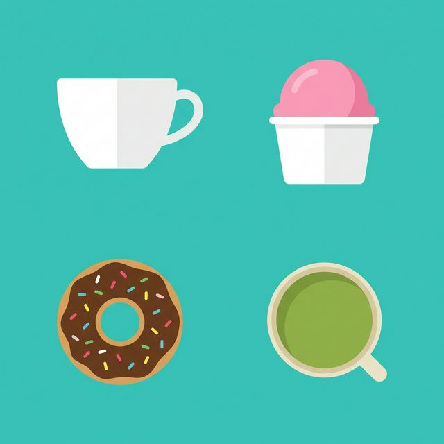

Welcome to Metropolis!
Discover a vibrant urban landscape filled with rich history, stunning architecture, and endless entertainment. Whether you are here for a weekend getaway or a long-term stay, our city offers an unforgettable experience for every type of traveler.
Explore hidden gems in our downtown districts, relax in our sprawling public parks, and enjoy the lively atmosphere of our cultural centers.
Culinary Delights

From world-class fine dining to incredible street food, the city's culinary scene is unmatched. Taste authentic global cuisines, artisanal coffees, and freshly baked pastries that will leave you craving more on every visit.
Getting Around
Subway: The most efficient way to travel safely across the city. Trains run 24/7 with stops at all major tourist attractions and business hubs.
Buses: Take a scenic route along the coast or through historic neighborhoods. Perfect for sightseeing at your own pace.
Biking: Rent one of our thousands of city bikes to explore our dedicated cycling paths and greenways.